Grafana¶
Auteurs
Mateo BEAUGENDRE Lucien BESCOS Liam BOIGEGRAIN
Installation et configuration de Grafana¶
Installation du service¶
Installation des prérequis :
Ajout de la clef PGP :
sudo mkdir -p /etc/apt/keyrings
sudo wget -O /etc/apt/keyrings/grafana.asc https://apt.grafana.com/gpg-full.key
sudo chmod 644 /etc/apt/keyrings/grafana.asc
Ajout du dépôt :
echo "deb [signed-by=/etc/apt/keyrings/grafana.asc] https://apt.grafana.com stable main" | sudo tee -a /etc/apt/sources.list.d/grafana.list
Mise à jour des dépôts :
Installation de Grafana :
Activer Grafana au démarrage et le lancer :
sudo /bin/systemctl daemon-reload
sudo /bin/systemctl enable grafana-server
sudo /bin/systemctl start grafana-server
Configuration du service WEB¶
Configuration HTTP sur le port 80¶
Par défaut Grafana est sur le port 3000, pour le mettre sur le port 80 il faut modifier le service associé
[Service]
# Give the CAP_NET_BIND_SERVICE capability
CapabilityBoundingSet=CAP_NET_BIND_SERVICE
AmbientCapabilities=CAP_NET_BIND_SERVICE
# A private user cannot have process capabilities on the host's user
# namespace and thus CAP_NET_BIND_SERVICE has no effect.
PrivateUsers=false
Définissez le port dans les paramètre de Grafana :
Redémarrer Grafana
Configuration HTTPS sur le port 443¶
Comme pour le port 80, Grafana doit pouvoir binder un port <1024. On ajoute donc la même capacité système pour le port 443 si pas encore appliqué.
Ajoute :
[Service]
CapabilityBoundingSet=CAP_NET_BIND_SERVICE
AmbientCapabilities=CAP_NET_BIND_SERVICE
PrivateUsers=false
Recharge la configuration systemd :
Génération d’un certificat autosigné¶
Créer un certificat et une clé privée avec OpenSSL :
sudo mkdir -p /etc/grafana/certs
cd /etc/grafana/certs
sudo openssl req -x509 -nodes -days 365 \
-newkey rsa:2048 \
-keyout grafana.key \
-out grafana.crt
Durant la génération, renseigne :
- Common Name (CN) : nom de domaine ou IP du serveur Grafana
Exemple :
Sécuriser les permissions :
sudo chown grafana:grafana /etc/grafana/certs/grafana.*
sudo chmod 600 /etc/grafana/certs/grafana.key
Configuration de Grafana pour HTTPS¶
Modifier la configuration :
Dans la section [server] :
[server]
protocol = https
http_port = 443
cert_file = /etc/grafana/certs/grafana.crt
cert_key = /etc/grafana/certs/grafana.key
Redémarrage du service¶
Option : redirection HTTP → HTTPS¶
Si tu veux conserver le port 80 pour rediriger vers 443 :
Configuration WEB :¶
Première connexion¶
L'adresse dans notre contexte est donc :
Connectez vous avec admin/admin par défaut (il vous demandera de le changer) :
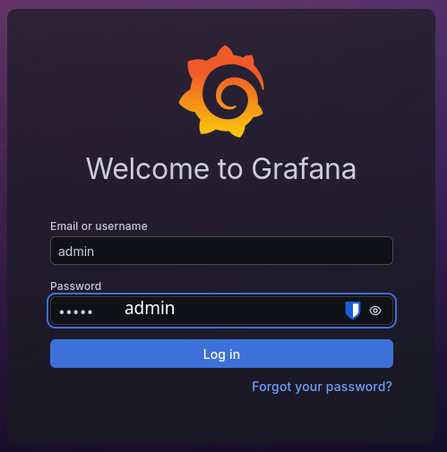
Connexion à ZABBIX¶
Génération de la clef d'API¶
Dans l'onglet d'API, créer un Token :
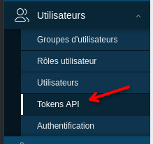 |
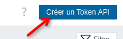 |
Sélectionnez un utilisateur privilégié ainsi qu'un nom parlant :
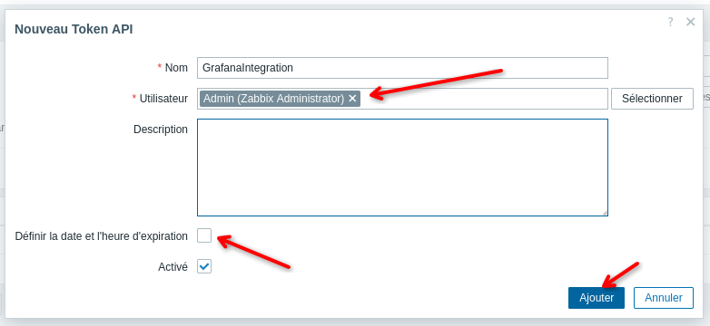
Notez le Token généré pour plus tard :
Liaison de Grafana à ZABBIX¶
Dans l'onglet “Connexion”, ajouter Zabbix :
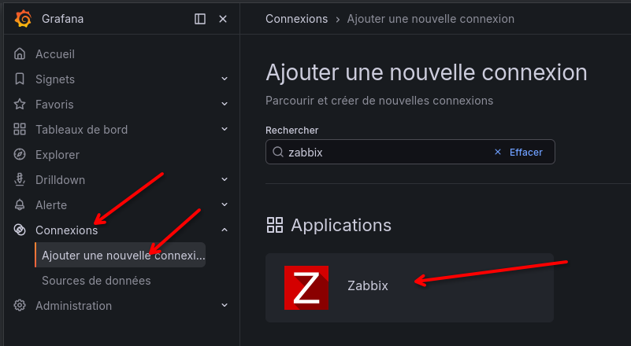
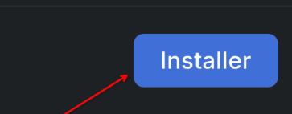 |
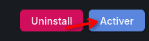 |
Pour récupéré les données, ajouter Zabbix comme source de données :
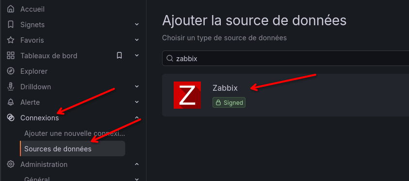
| Modifier son nom : | 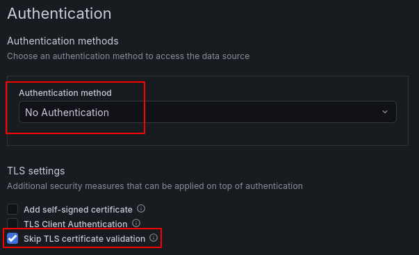 |
| Indiquer l'url avec le chemin d'API : | 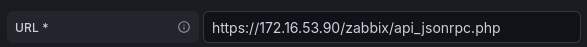 |
| Préciser pas d'authentification et passé la vérification de certificat (car autosigné) : | |
| Définissez le Token généré auparavant : | 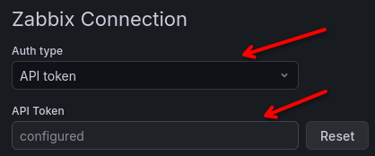 |
| Enregistrer et vérifier la configuration : | 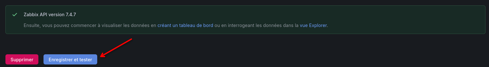 |
Création du Dashboard¶
Nous allons voir les étapes général afin d'arriver au mieux à créer un dashboard adapté à Zabbix :

Deux variables indispensable à besoins d'être créé : Groupe et Hôte :
 |
 |
Ceci nous permettra de sélectionner les variables dans les requêtes afin d'avoir des graphique adaptatif à l'élément, comme ici pour le graphique d'utilisation de la RAM :

Pour le tableau d’alerte, sélectionner le menu fourni par le plugin :
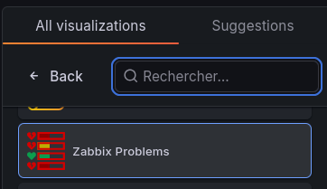
Et entrer cette syntaxe afin de voir les erreurs pour tout un groupe indépendamment de l'hôte sélectionner :
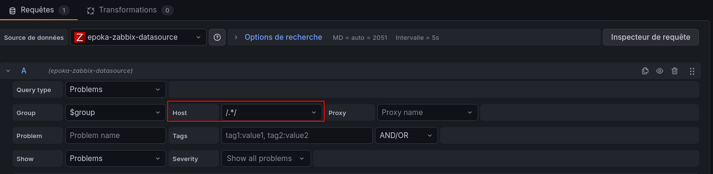
Il vous reste plus qu'à créer votre Dashboard adapté à vos besoin.